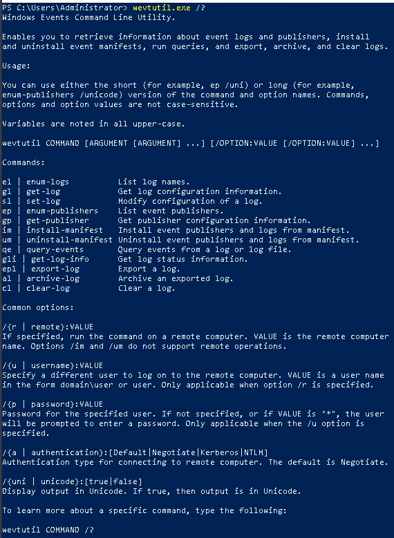
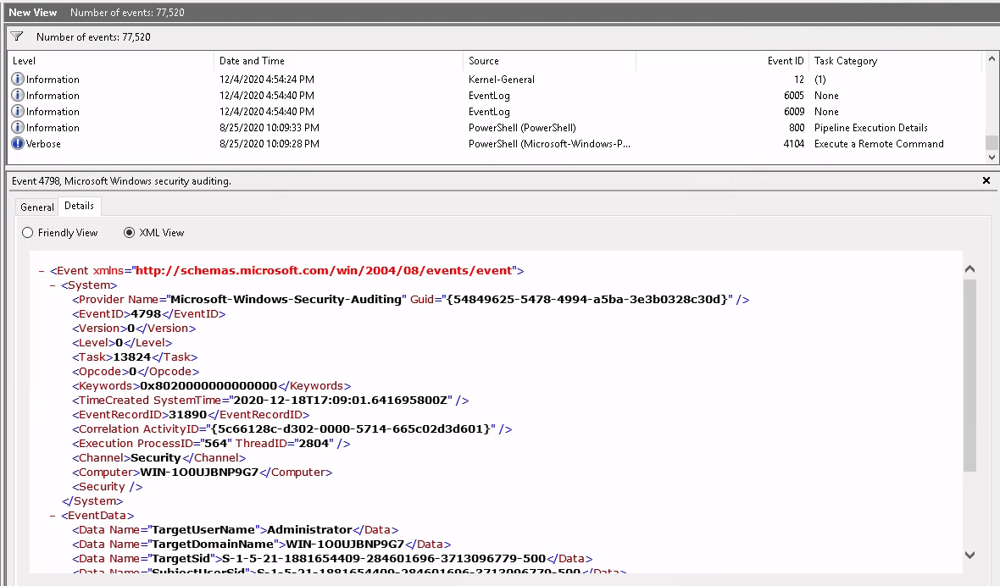

Windowlogs
Introduction:⌗
Think of logs as digital diaries that jot down what’s happening in systems, apps, or networks. They’re like a timeline of events, helping us figure out problems, spot weird stuff, and understand how things behave. In the cybersecurity world, logs are like detectives – they help us solve mysteries, catch bad guys, and keep things safe. They’re the key to knowing what’s going on in our digital world!
The Event Viewer is like a detective’s notebook for your computer. Which will prove to be an important component for us to investigate anything on our computer.

Once you lunch the event viewer, you can see multiple windows:
• The left side is the directories that stores all different types of logs.
• The middle displays the general summary of the selected log.
• The right is the action window.
On the logs property, you can see the log location, log size, and when it was created, modified and last accessed. You can also notice the max size of the log and the type of action that should be taken once the max size is reached. Keep an eye on the right bottom corner where it says clear log, this is a crucial options that can be used during security maintenance, or an adversary trying to stay undetected.

You can see on the overview window some columns: • Level highlights the log recorded type based on the identified event. • Data and Time highlight the time when the event was logged. • Source highlights the name of the software that it was originated from. • Event ID is a predefined numerical value that maps to a specific operation based on the log source. • Task Category highlights the event category.
Once you choose any of the logged events you will see a new windows like the one in the picture about in the light grey, you can see details about the event and general explanation.
By pressing on the column category that you want you can filter them in descending or ascending order. Example, by pressing on Date and Time I filtered the time of each event to check the earliest event on my Event Viewer.

On Action window we can perform several tasks like opening a saved log, which is usually used when working remotely, or creating custom view/filter current log to help you make your search easier. In this example I needed to search for a specific event in my current log file, so I chose filter current log and added the ID of the event to filter it out of the other events.
PowerShell Automation tools:⌗
Wevtutil.exe:⌗
Even with the filtering help it is still inconvenient to be going through thousands of logs, that’s why there are some tools in PowerShell that can help us automate the process. Example, wevtutil.exe is a tool that can help us enumerate through the logs automatically, to find the list of flags that can be used with this tools simply add wevtutil.exe /?.

To find more information about the flags you can visit this link Reference Link
I needed to count the log names available on the machine, but since I am not very familiar with PowerShell commands it proved to be a difficult, so I looked into the provided hint that says we need to combine enum-logs with Measure-Object cmdlet to count the event names.
Get-WinEvent:⌗
Get-WinEvent is a PowerShell cmdlet used to retrieve events from event logs on a Windows computer. It allows you to access and analyze event log data programmatically. Reference Link
Top Get-WinEvent Flags:
| Command | Description |
|---|---|
| -ListLog | Obtains all event logs locally. |
| -ListProvider | Obtain event log providers and their associated logs. |
| -LogName | Obtain the selected events from an event log. |
| -FilterHashtable @{LogName=’’ ProviderName=’'} | Obtain filtered event logs. |
| -Path | Obtains logs in a specific path. |
Where-Object cmdlet allows you to filter event logs, but when working with large event logs, it’s inefficient to send objects down the pipeline to a Where-Object command, It is recommended to use FilterHashtable instead.
XPath Queries:⌗
XPath (XML Path Language) queries are used to navigate and query XML documents, including event logs in PowerShell. In PowerShell, XPath queries are often used with cmdlets like wevtutil and Get-WinEvent to filter and extract specific elements from XML-based data. Reference Link
XPath Query Example:
*[System[(Level <= 3) and TimeCreated[timediff(@SystemTime) <= 86400000]]] or replace * with Event.
Note: Event viewer can help us with constructing XPath query.
Example:
1.Get-WinEvent -LogName Application -FilterXPath '*/System/EventID=800'. You can replace the keyword System with * or Event.
2.wevtutil.exe qe Application /q:*/System[EventID=100] /f:text /c:1.
3.Get-WinEvent -LogName Application -FilterXPath '*/System/Provider[@Name="WLMS"]'.
4. Get-WinEvent -LogName Application -FilterXPath '*/System/EventID=101 and */System/Provider[@Name="WLMS"]'.
Event IDs:⌗
When we are working logs, it is very important to know what we are looking for under the pile of thousands of events: • Here is an outdate cheat sheet that will help us in determining what we are looking for Reference Link. • There is also a guide made by NSA also outdate, but it can build your foundation Reference Link. • Another source is MITRE Attack website https://attack.mitre.org/. • Two other important sources Events to View and Windows 10 and Windows server 2016 auditing. Note: Some events will not be generated by default, and certain features will need to be enabled/configured on the endpoint, such as PowerShell logging. This feature can be enabled via Group Policy or the Registry. Local Computer Policy –> Computer Configuration –> Administrative Templates –> Windows Components –> Windows PowerShell
Other sources that provide more information about enabling more features:
• Greater Visibility Through PowerShell Logging.
Another feature to enable/configure is Audit Process Creation, which will generate event ID 4688. This will allow command-line process auditing. This setting is NOT enabled in the virtual machine but feel free to enable it and observe the events generated after executing some commands Reference Link.
Local Computer Policy --> Computer Configuration --> Administrative Templates --> System --> Audit Process Creation.
Practical:⌗
I have a saved log file called merged and I am tasked to search through the file and solve multiple different scenarios. First scenario, Admins complained about PowerShell being blocked and now I need to monitor it. I searched for the PowerShell Event and found some information on this website Reference Link, but I needed to search for a PowerShell downgrade attack. I searched on google to find some info about it and found a repository that explains about the event Reference Link, which helped me filter the events and pinpoint the downgrade attack and I simply searched for the entry where the HostVerion was changed.
Second Scenario, someone cleared the system logs and we need to find the Event Record ID and the Computer name. To find the log clear I filtered the source to event log and immediately found the log clear task category.
Third scenario, The threat intel team shared its research on Emotet and advised searching for event ID 4101 and the text “ScriptBlockText”. I Tried to filter using the event ID given 4101 but for some odd reason it displayed that it wasn’t found, so then I tried searching for the event ID using Get-WinEvent -Path C:\Users\Administrator\Desktop\merged.evtx -FilterXPath ‘*/System/EventID=4101’ and it displayed an error. I also tried using wevtutil and it also gave me errors, so I looked into the given hint which told me to use -Oldest -MaxEvents 1 and pipe to Format-List, but I didn’t notice the Format-List when I wrote the command.
Once I knew the time created, I filtered using the time and found the event I am looking for.

Fourth and final scenario, an intern suspected of running an unusual command on her machine. We are recommended to search for “C:\Windows\System32\net1.exe”. I searched for user enumeration and found two results that I used as a clue.
Since my objective was to find security group information, I filtered for event ID 4799 and found all the required information, which concluded the room.